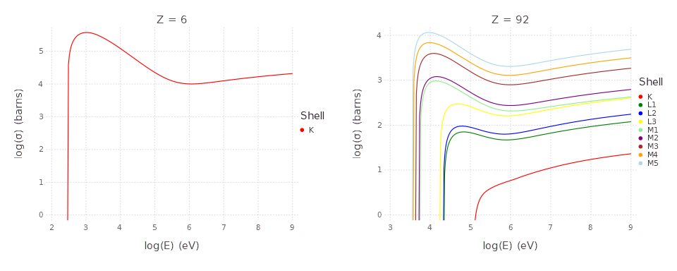

Bote-Salvat Ionization Cross-Section
This notebook shows how to use the BoteSalvatICX.jl It uses the optional Gadfly plotting support to plot the cross-section from threshold to 1 GeV.
using BoteSalvatICX
using GadflyWhen Gadfly is imported, you can plot the ionization cross-sections for electron impact on the elements.
set_default_plot_size(10inch, 4inch)
hstack(plot(BoteSalvat2009, 6), plot(BoteSalvat2009, 92))
BoteSalvatICX.jl exports three methods for accessing the cross-section, the available sub-shells and edge energies.
You can determine whether the algorithm is implemented for the specified sub-shell using hasedge(::Type{BoteSalvat2009}, z::Integer, subshell::Int). Elements are identified by atomic number and sub-shells are indexed in K, L₁, L₂, L₃, M₁, M₂, M₃, M₄, M₅... order as 1, 2, 3, 4, 5, 6, 7, 8, 9 respectively. The most of the sub-shells that are typically ionized in X-ray and Auger events have been implemented. However, no N-sub-shell cross-sections are available.
(hasedge(BoteSalvat2009, 6, 1), hasedge(BoteSalvat2009, 6, 2), hasedge(BoteSalvat2009, 92, 9), hasedge(BoteSalvat2009, 92, 10) )(true, false, true, false)The edge-energies can be accessed via edgeenergy(BoteSalvat2009, z::Integer, shell::Int). All energies are in eV.
(edgeenergy(BoteSalvat2009, 6, 1), edgeenergy(BoteSalvat2009, 92, 9))(291.001, 3554.1)The ionization cross-section is access using ionizationcrosssection(::Type{BoteSalvat2009}, z::Int, subshell::Int, energy::AbstractFloat, edgeenergy::AbstractFloat). The result is in cm²/atom. To convert to the conventional atomic cross-section unit barns, multiply by 10²⁴ barns/cm².
1.0e24*[ionizationcrosssection(BoteSalvat2009, 6, 1, 600.0, edgeenergy(BoteSalvat2009, 6,1)), ionizationcrosssection(BoteSalvat2009, 92, 9, 7000.0, edgeenergy(BoteSalvat2009, 92, 9))]2-element Array{Float64,1}:
315881.4942844842
11050.381033393129At or below the ionization edge, the function returns 0.
1.0e24*[ionizationcrosssection(BoteSalvat2009, 6, 1, edgeenergy(BoteSalvat2009, 6, 1), edgeenergy(BoteSalvat2009, 6, 1)), ionizationcrosssection(BoteSalvat2009, 92, 9, 3000.0, edgeenergy(BoteSalvat2009, 92, 9))]2-element Array{Float64,1}:
0.0
0.0